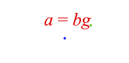

Equations API Reference
Contents
- EQN_TextElement
- TypeEquationElement
- EQN_EquationElements
- EQN_FormAlignment
- EQN_TranslationStyle
- EQN_FromForm
- EQN_FromForms
- EQN_FormObjectDefinition
- TypeEquationForm
- EQN_Forms
- EQN_FormRestart
- EQN_FormDefaults
- EQN_Equation
- Equation
- TypeEquationPhrase
EQN_TextElement
Definition of a text or equation element.
The properties 'color', 'isTouchable', 'onClick' and touchBorder
modify the corresponding properties on the FigureElementPrimitive
itself, and so could equally be set in mods. They are provided in the
root object for convenience as they are commonly used.
Properties
- text: string | undefined
- font: OBJ_Font | undefined
- Text element only
- style: 'italic' | 'normal' | undefined
- Text element only
- mods: object | undefined
- Properties to set on instantiated element
- color: TypeColor | undefined
- Color to set the element
- isTouchable: boolean | undefined
- make the element touchable
- onClick: () => void | 'string' | null | undefined
- called when touched
- touchBorder: TypeBorder | 'border' | number | 'rect' | 'draw' | 'buffer' | undefined
set the element's touch border
- mods: OBJ_ElementMods | undefined
TypeEquationElement
An equation element can be any of the below. If string, then a
EQN_TextElement will be used where the text property is the
string.
string- FigureElementPrimitive
- FigureElementCollection
- EQN_TextElement
- EQN_VinculumSymbol
- EQN_BoxSymbol
- EQN_ArrowSymbol
- EQN_SumSymbol
- EQN_ProdSymbol
- EQN_IntegralSymbol
- EQN_StrikeSymbol
- EQN_BracketSymbol
- EQN_AngleBracketSymbol
- EQN_BraceSymbol
- EQN_BarSymbol
- EQN_SquareBracketSymbol
- EQN_LineSymbol
- EQN_RadicalSymbol
EQN_EquationElements
Object where keys are element names, and values are the element definitions
Properties
- _elementName: TypeEquationElement | undefined
Equation
EQN_FormAlignment
Form alignment object definition.



Each equation form is positioned within the Equation FigureElementCollection draw space (0, 0) point. This object defines how the form is aligned with this (0, 0) point.
Using the fixTo property forms can either be aligned relative to the
bounds of the form itself, or to an element within the form, or to a
position other than the (0, 0) in in the equation's collection draw space.
If fixTo is an element in the equation:
- the
fixToelement is positioned at (0, 0), and all other elements repositioned relative to that. - The equation collection setPosition (or translation transform) can then be used to position the equation in the figure (or relative collection space)
- if
xAlignis:'center': thefixToelement is centered in x around (0, 0)'right': thefixToelement right most point is at x = 0'left': default - thefixToelement x position at 0
- if
yAlignis:'middle': thefixToelement is centered in y around (0, 0)'bottom': thefixToelement bottom most point is at y = 0'top': thefixToelement top most point is at y = 0'baseline': default - thefixToelement y position at 0
If fixTo is a Point, the equation is positioned at that point in the
equation's draw space.
- xAlign:
'left': The equation's left most element's left most point is at Point.x'right': The equation's right most element's right most point is at Point.x'center': The equation is centered horizontally around Point.x
yAlign:'baseline': The equation's baseline is at Point.y'top': The equation's top most element's top most point is at Point.y'bottom': The equation's top most element's top most point is at Point.y'middle': The equation is centered vertically around Point.y
Properties
- fixTo: FigureElement | TypeParsablePoint | string | undefined = [0, 0]
- xAlign: TypeHAlign | undefined = 'left'
- yAlign: TypeVAlign | undefined = 'baseline'
Note - the points are drawn in the figure's draw space, but as the
// equation collection is at (0, 0) and it has not scaling applied, then
// the equation's draw space is the same as the figure's draw space.
// Draw (0, 0) point in equation collection
figure.add({
make: 'polygon', options: { radius: 0.01, color: [0, 0, 1, 1], sides: 9 },
});
// Default alignment is left, baseline
figure.add([
{
make: 'equation',
forms: { 0: ['a', '_ = ', 'bg'] },
},
]);
Draw (0, 0) point in equation collection
figure.add({
make: 'polygon', options: { radius: 0.01, color: [0, 0, 1, 1], sides: 9 },
});
// Align with right, middle
figure.add([
{
make: 'equation',
forms: { 0: ['a', '_ = ', 'bg'] },
formDefaults: {
alignment: {
xAlign: 'right',
yAlign: 'middle',
},
},
},
]);
Draw (0, 0) point in equation collection
figure.add({
make: 'polygon', options: { radius: 0.01, color: [0, 0, 1, 1], sides: 9 },
});
// Align with center of equals sign
figure.add([
{
make: 'equation',
forms: { 0: ['a', '_ = ', 'bg'] },
formDefaults: {
alignment: {
fixTo: '_ = ',
xAlign: 'center',
yAlign: 'baseline',
},
},
},
]);
Draw (0, 0) and (0.2, 0.1) points
figure.add([
{
make: 'polygon',
options: { radius: 0.01, color: [0, 0, 1, 1], sides: 9 }
},
{
make: 'polygon',
options: {
radius: 0.01, color: [0, 0.8, 0, 1], sides: 9, position: [0.2, 0.1],
},
},
]);
// Align with point (0.2, 0.1) in the equation collection
figure.add([
{
make: 'equation',
forms: { 0: ['a', '_ = ', 'bg'] },
formDefaults: {
alignment: {
fixTo: [0.2, 0.1],
xAlign: 'right',
yAlign: 'baseline',
},
},
},
]);
To test examples, append them to the boilerplate
EQN_TranslationStyle
Form translation properties
Properties
- style: 'curved' | 'linear'
- element should move in a straight line, or through a curve. Default:
"linear" - direction: 'up' | 'down' | undefined
- curve only - element should move through an up or down curve
- mag: number | undefined
- the magnitude of the curve
EQN_FromForm
From form options object.
Any defined properties will override the corrsponding properties of the form if it being animated to from a specific form.
Properties
- duration: ?number | undefined
duration if animating to this form, use
nullfor velocity based duration - translation: EQN_TranslationStyle | undefined
translation style when animating to this form
- onTransition: string | (() => void) | undefined
called at the start of animating to this form, or when
showFormis used. - onShow: string | (() => void) | undefined
called after animation is finished or when
showFormis used - elementMods: OBJ_ElementMods | undefined
properties to set in the equation element (@FigureElementPrimitive) when this form is shown
EQN_FromForms
Equation form FromForm definition.
When animating from a specific form, it can be useful to customize some of the form properties specific to that transition.
To do so, use this options object where each key is the specific form from which the equation is animating from, and the value is the specific properties.
Properties
- _formName: EQN_FromForm | undefined
EQN_FromForm, EQN_FormObjectDefinition
EQN_FormObjectDefinition
In mathematics, an equation form is a specific arrangement of an equation's terms and operators. Different forms will have different arrangements, that can be achieved by performing a series of operations to both sides of the equation.
For instance, the equation:
a + b = c
can be rearranged to a different form:
a = c - b
From a FigureOne figure's perspective, a form is a specific layout of equation elements.
This object defines a how the elements are laid out, what properties the elements have, and some animation properties for when animating to this form.
Properties
- content: TypeEquationPhrase
The equation phrase of the form defines how the elements are laid out
- scale: number | undefined
scaling factor for this form
- alignment: EQN_FormAlignment | undefined
how the equation's position is aligned with this form
- description: string | undefined
description of this form
- {{}} [modifiers] description modifiers
- duration: ?number | undefined
duration if animating to this form, use
nullfor velocity based duration - translation: EQN_TranslationStyles | undefined
translation style when animating to this form
- onTransition: string | (() => void) | undefined
called at the start of animating to this form, or when
showFormis used. - onShow: string | (() => void) | undefined
called after animation is finished or when
showFormis used - elementMods: OBJ_ElementMods | undefined
properties to set in the equation element (@FigureElementPrimitive) when this form is shown
- fromForm: EQN_FromForms | undefined
override
duration,translationonTransitionand/oronShowwith this if coming from specific forms - ignoreColor: boolean | undefined = false
when
false, color will be set automatically in the equation based on EQN_Color equation functions. In such cases, colors that are set external to the equation will be overridden. Usetrueto allow setting of colors externally only.
Simple form definition of two different forms of the same equation and one
// of the elements is colored blue in one form and red in the other
figure.add({
name: 'eqn',
make: 'equation',
elements: { equals: ' = ', plus: ' + ', minus: ' \u2212 ' },
forms: {
form1: {
content: ['a', 'plus', 'b', 'equals', 'c'],
elementMods: {
a: { color: [0, 0, 1, 1] },
},
},
form2: {
content: ['a', 'equals', 'c', 'minus', 'b'],
elementMods: {
a: { color: [1, 0, 0, 1] },
},
},
},
});
Example showing all form options
figure.add({
name: 'eqn',
make: 'equation',
forms: {
form1: {
content: ['a', 'b', 'c'],
subForm: 'deg',
scale: 1.2,
alignment: {
fixTo: 'b',
xAlign: 'center',
yAlign: 'bottom',
},
description: '|Form| 1 |description|',
modifiers: {
Form: { font: { color: [0, 0, 1, 0] } },
},
elementMods: {
a: {
color: [0, 0, 1, 1],
isTouchable: true,
},
},
duration: 1,
translation: {
a: {
style: 'curved',
direction: 'up',
mag: 0.95,
},
b: ['curved', 'down', 0.45],
},
fromPrev: {
duration: null,
translation: {
a: ['curved', 'down', 0.2],
b: ['curved', 'down', 0.2],
},
},
fromNext: {
duration: 2,
translation: {
a: ['curved', 'down', 0.2],
b: ['curved', 'down', 0.2],
},
},
},
},
});
Equation
TypeEquationForm
A form definition can either be:
- an equation form object EQN_FormObjectDefinition
- an equation phrase TypeEquationPhrase
@type {TypeEquationPhrase | EQN_FormObjectDefinition}
EQN_Forms
An object of equation forms where each key is the form name and each value is a form defintion TypeEquationForm
Properties
- _formName: TypeEquationForm | undefined
EQN_FormRestart
When an equation form series is restarted, or cycled back to the first form in the series, then two special animations can be defined with this object:
moveFrom: the equation will move from a location (usually another equation of the same form)pulse: An element will be pulsed when the animation is finished.
The default values in the pulse object are are:
duration: 1sscale: 1.1
EQN_FormDefaults
Default form values applied to all forms
EQN_FormObjectDefinition
EQN_Equation
Options objects to construct an Equation class.
All properties are optional.
Properties
- color: TypeColor | undefined
default equation color
- dimColor: TypeColor | undefined
default equation dim color
- font: OBJ_Font | undefined
default FigureFont for math elements in the equation
- textFont: OBJ_Font | undefined = defaults to font
default FigureFont for text elements in the equation
- scale: number | undefined = 0.7
equation scale
- elements: EQN_EquationElements | undefined
equation element definitions
- forms: EQN_Forms | undefined
form definitions
- initialForm: string | undefined
form to show when first added to a figure
- formDefaults: EQN_FormDefaults | undefined
default form options applied to all forms
- formSeries: Array<string> | Object.<Array<string>> | undefined
an object with each key being a form series name, and each value an array for form names. If defined as an array, then a form series object is created where the form series name is 'base'. Default: {}
- defaultFormSeries: string | undefined
If more than one form series is defined, then a default must be chosen to be the first current one. Default: first form defined
- formRestart: ?EQN_FormRestart | undefined
behavior when form transitions from last in form series back to first
- position: TypeParsablePoint | undefined
position will override first translation element of transform
- transform: Transform | undefined
Equation
Extends FigureElementCollection
An Equation is a collection of elements that can be arranged into different forms.
Equation should be instantiated from an object definition, or from
the figure.collections.equation method.
Equation includes two additional animation steps in Equation.animations:
- GoToFormAnimationStep
- NextFormAnimationStep
Parameters
- options: EQN_Equation
Create with options definition
figure.add({
name: 'eqn',
make: 'equation',
elements: {
a: 'a',
b: { color: [0, 0, 1, 1] },
c: 'c',
equals: ' = ',
plus: ' + ',
},
forms: {
1: ['a', 'equals', 'b', 'plus', 'c'],
},
});
Create with methods
const eqn = figure.collections.equation();
eqn.addElements({
a: 'a',
b: { color: [0, 0, 1, 1] },
c: 'c',
equals: ' = ',
plus: ' + ',
});
eqn.addForms({
1: ['a', 'equals', 'b', 'plus', 'c'],
});
figure.add('eqn', eqn);
eqn.showForm('1');
To test examples, append them to the boilerplate
TypeEquationPhrase
An equation phrase is used to define an equation form and can be any of the below:
string(which represents the unique identifier of an equation element){ frac:EQN_Fraction}{ strike:EQN_Strike}{ box:EQN_Box}{ tBox:EQN_TouchBox}{ root:EQN_Root}{ brac:EQN_Bracket}{ sub:EQN_Subscript}{ sup:EQN_Superscript}{ supSub:EQN_SuperscriptSubscript}{ topBar:EQN_Bar}{ bottomBar:EQN_Bar}{ annotate:EQN_Annotate}{ topComment:EQN_Comment}{ bottomComment:EQN_Comment}{ pad:EQN_Pad}{ bar:EQN_Bar}{ scale:EQN_Scale}{ container:EQN_Container}{ offset:EQN_Offset}{ matrix:EQN_Matrix `}{ lines:{@link EQN_Lines}}{ int:{@link EQN_Integral}}{ sumOf:{@link EQN_SumOf}}{ prodOf:{@link EQN_ProdOf}}{ topStrike:{@link EQN_StrikeComment}}{ bottomStrike:{@link EQN_StrikeComment}}Array<TypeEquationPhrase>
Example 1
figure.add({
name: 'eqn',
make: 'equation',
elements: { equals: ' = ' },
forms: {
form1: 'a',
form2: ['a', 'equals', 'b'],
form3: [{
frac: {
numerator: 'a',
symbol: 'vinculum',
denominator: 'c',
},
}, 'equals', 'b'],
form4: { frac: ['a', 'vinculum', 'c'] },
},
});
figure.getElement('eqn').animations.new()
.goToForm({ target: 'form2', animate: 'move', delay: 1 })
.goToForm({ target: 'form3', animate: 'move', delay: 1 })
.goToForm({ target: 'form4', animate: 'move', delay: 1 })
.start();
- Text element only